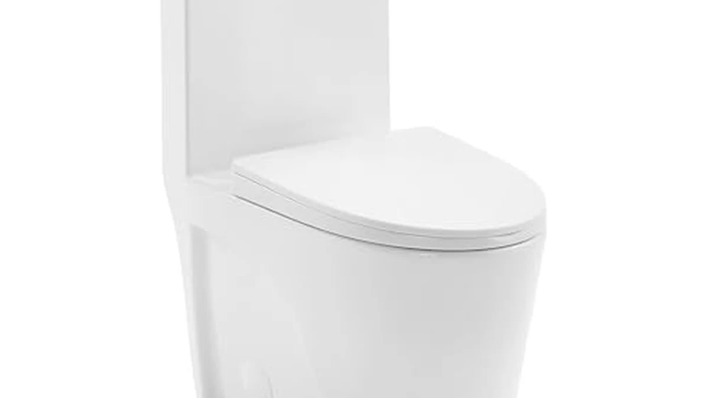

Best Elongated One Piece Toilets of 2026: 6 Comfort Picks
Prices and picks verified as of August 2026. Independent, reader-supported reviews.


Quick Answer
For most bathrooms, the WOODBRIDGE One Piece Toilet is the elongated one-piece to buy: it pairs a comfortable chair-height bowl with a soft-close seat already in the box, a seamless skirted body that wipes clean in one pass, and a strong siphon flush, all at a mid-tier price. Measure your rough-in (almost always 12 inches) before you order.
Our pick: WOODBRIDGEE One Piece Toilet with — $318.93 Check Price on Amazon
Bottom line: our top pick is the WOODBRIDGEE One Piece Toilet with Soft Closing Seat at $318.93. The best budget option is the DeerValley Elongated One-Piece Toilet with Comfort Chair Seat at $215.
Things to Know Before You Buy
- Elongated vs round: an elongated bowl is roughly two inches longer than a round one, which most adults find noticeably more comfortable. The trade-off is floor depth, so if your bathroom is very tight a round bowl may fit better.
- Comfort (chair) height matters: a comfort-height bowl sits around 17 inches to the seat versus about 15 inches on a standard bowl, so it is easier to sit down onto and stand up from. It is the ADA-friendly choice for taller users and anyone with knee or back issues.
- One-piece means less cleaning: the tank and bowl are molded as one unit, so there is no tank-to-bowl seam or crevice to trap grime. The downside is weight, most of these run 80 to 120 pounds, so plan for a second set of hands during install.
- Measure your rough-in first: that is the distance from the finished wall to the center of the drain bolts, and it is 12 inches on the vast majority of homes. Confirm it before buying, a 10- or 14-inch rough-in needs a different toilet.
- Check whether a seat is included: some of these ship with a soft-close seat in the box (a real convenience) and some do not. Factor a $30 to $50 seat into the budget when it is missing.
- Water use adds up: dual-flush and low-GPF models (down to 1.0 gallon per flush here) cut water bills over the years without sacrificing bowl clearance on modern siphon-jet designs.
An elongated one-piece toilet is the sweet spot for a lot of American bathrooms: the longer bowl is more comfortable to actually sit on, and the seamless one-piece body skips the grimy tank-to-bowl seam that makes two-piece toilets annoying to clean. Pair that with a comfort-height bowl and you have a fixture that is genuinely more pleasant to live with, not just a spec-sheet upgrade.
The catch is that these toilets are heavy, the price range is wide, and the listings bury the details that matter. Some include a soft-close seat and some make you buy one. Flush systems range from basic gravity siphons to dual-flush and 1.0-GPF water misers. And every one of them assumes you have already measured your rough-in, which most first-time buyers have not.
We sorted through the elongated one-piece models worth considering and narrowed it to six, from a $240 budget pick to a $359 designer matte-white ADA model. Each one below has a clear job, and we call out the honest drawbacks so you do not find them out after a 100-pound box lands on your porch.
Why You Should Trust Us
This guide is written and maintained by Ilane Tall, who runs a network of bathroom-focused review sites and spends more time than is reasonable comparing fixtures on the specs that actually predict satisfaction rather than marketing copy. We do not run a fake testing lab and we did not bolt six toilets to a warehouse floor. What we do is read every spec sheet, cross-check bowl height, rough-in and flush volume against the listing photos and hundreds of owner reviews, flag the complaints that keep coming up, and refuse to recommend anything we would not install in our own home. Our Amazon commissions never change a ranking.
How We Picked
We started with elongated one-piece toilets that are actually in stock and shipping in the US, then filtered hard on the things that make or break daily use: a comfortable bowl height (most of our picks are comfort or chair height), a flush system that clears the bowl in one go, a 12-inch rough-in so it fits standard homes, and a seamless skirted or semi-skirted body that is easy to wipe down. We gave extra weight to models that include a soft-close seat, since that quietly saves you $30 to $50 and a second shopping trip. We set aside anything with a pattern of leaks, cracked-on-arrival reports, or weak flush complaints, and we made sure the final six span a real range of budgets so there is a sensible answer whether you have $240 or $360 to spend.
How We Compared
Since we do not stage a warehouse full of installed toilets, our evaluation is a documentation and owner-experience review rather than a hands-on lab test, and we would rather say that plainly than fake a testing rig. For each model we mapped the published dimensions, seat height and rough-in against what buyers report in photos and long-term reviews, watched for the failure patterns that show up after a few months (running fills, weak siphons, seat hinges that loosen), and weighed how the flush technology and water use hold up against the price. Where a listing claimed a feature we could not corroborate in owner feedback, we treated it skeptically. The result is a shortlist built on the specs and real-world complaints that predict whether you will be happy a year from now.
Our Picks

WOODBRIDGEE One Piece Toilet with
What we like
- Comfortable chair-height elongated bowl that is easy to sit down onto and stand up from
- Soft-close seat included, so there is nothing extra to buy or slam
- Fully skirted seamless body wipes clean in a single pass, no crevices
- Strong siphon flush clears the bowl reliably in owner reports
Flaws but not dealbreakers
- At over 100 pounds it is a genuine two-person install
- Priced above the bargain models, you are paying for the included seat and skirted design
| Material | — |
| Size | — |
The WOODBRIDGE is the toilet we would put in most bathrooms without a second thought. It nails the fundamentals: an elongated bowl at a comfortable chair height, a fully skirted one-piece body with no seam to scrub, and a siphon flush that owners consistently describe as strong and quiet. The soft-close seat is already in the box, which sounds minor until you price out a decent aftermarket seat and realize this quietly saves you a trip and $40.
The honest caveats are weight and price. This is a heavy fixture, so line up a helper and a furniture dolly before the box arrives. And it costs more than the budget picks below, though the included seat and skirted design close most of that gap. Confirm you have a standard 12-inch rough-in, and this is close to a no-regrets buy.

HOROW T0338WM Elongated One Piece
What we like
- Striking matte-white finish that stands apart from the usual glossy porcelain
- ADA-compliant comfort height for easy, accessible sitting and standing
- Dual-flush lets you choose a light or full flush to save water
- Sleek skirted one-piece body with clean, contemporary lines
Flaws but not dealbreakers
- The most expensive pick here, you are paying a premium for the finish and design
- Matte surfaces can show water spots and need gentler cleaners than glossy porcelain
| Material | — |
| Size | 12" Rough-in |
The HOROW T0338WM is the pick for anyone who cares how the toilet looks, not just how it works. The matte-white finish reads as genuinely high-end next to the glossy porcelain everyone else installs, and the skirted one-piece body keeps the lines clean and modern. Underneath the styling it is a serious fixture: ADA-compliant comfort height and a dual-flush system that lets you pull a light flush for liquids and a full one when needed.
Two things to weigh. It is the priciest toilet on this list, so it only makes sense if the designer finish is part of the point for you. And matte surfaces, while gorgeous, show water spots more readily and prefer gentle, non-abrasive cleaners over the harsh stuff. If you want a statement fixture with real accessibility and water-saving credentials behind the looks, it earns the runner-up spot.

St. Tropez Comfort Height One-Piece
What we like
- Vortex flush creates a swirling action that scrubs the bowl thoroughly
- Comfort height makes sitting and standing easier on the knees
- Seamless skirted one-piece body is quick to wipe down
- Well-known Swiss Madison design at a reasonable mid-range price
Flaws but not dealbreakers
- Seat is not always included, so budget for one if yours ships without
- The single-flush design gives up the water savings of a dual-flush model
| Material | — |
| Size | 12" Rough-in |
The Swiss Madison St. Tropez earns its place on flush performance. Its Vortex system spins water around the bowl instead of just dropping it straight down, and owners consistently praise how clean the bowl stays between cleanings. Add a comfort-height elongated bowl and a seamless skirted body, and you get a toilet that feels a step above its price in daily use.
Check the listing for whether a seat is bundled, since that varies and a missing seat adds $30 to $50 to the real cost. It is also a single-flush design, so if cutting your water bill is a priority the dual-flush picks here will serve you better. But for a strong, self-scrubbing flush at a mid-range price, the St. Tropez is an easy recommendation.

One-Piece Toilet for Bathroom Comfort
What we like
- True 16-inch comfort height is a real relief for taller users and stiff knees
- Dual-flush system lets you save water on every light flush
- Elongated bowl and skirted one-piece body for comfort and easy cleaning
- Priced well under $250 for a comfort-height dual-flush toilet
Flaws but not dealbreakers
- The taller seat can feel high for shorter users and small children
- Lesser-known brand, so long-term parts support is less certain than the majors
| Material | — |
| Size | 16" H & Dual Flush & Elongated |
If height is your priority, this is the pick. Where most comfort-height toilets land around 17 inches to the seat, this one is built to a true 16-inch bowl height before the seat, putting it firmly in tall, ADA-friendly territory. Taller users and anyone who dreads getting up off a low seat will feel the difference immediately. It backs that up with an elongated bowl, a dual-flush system for water savings, and a skirted one-piece body that is easy to keep clean.
The flip side of a tall seat is that it can feel high for shorter household members and young kids, so think about who uses the bathroom before committing. It is also a lesser-known brand, which means parts and support are less of a sure thing than with a major label. But for the money, a true comfort-height dual-flush elongated one-piece under $250 is a genuinely good deal.

DeerValley Elongated One-Piece Toilet with
What we like
- Lowest price on this list without dropping the features that matter
- Comfort chair height and ADA compliance for easy, accessible use
- Dual-flush system keeps water use down on every flush
- Elongated bowl and seamless one-piece body from an established value brand
Flaws but not dealbreakers
- Seat may not be included, so add $30 to $50 if yours ships without one
- Finish and hardware feel closer to builder-grade than the premium picks
| Material | — |
| Size | 18.2" H with Dual Flush |
The DeerValley proves you do not have to spend big to get the important stuff. At the lowest price on this list, it still delivers a comfort chair-height bowl, ADA compliance, an elongated shape and a dual-flush system, the same core features that cost far more on the premium models. DeerValley is an established value brand in the toilet space, so this is not a no-name gamble, and owners generally report it does exactly what a good toilet should.
You do feel the price in the details. Check whether a seat is bundled, because a missing one narrows the savings, and the finish and hardware read as solid builder-grade rather than luxury. Neither is a dealbreaker for a secondary bath, a rental, or a budget-conscious remodel where comfort height and water savings still matter. For the money, it is the best value here.

Elongated One Piece Toilet for
What we like
- Ultra-low 1.0 gallon-per-flush design uses less water than almost anything on the market
- Modern elongated profile with clean, contemporary styling
- Seamless one-piece body is quick and easy to keep clean
- Lower water use adds up to real savings on the utility bill over time
Flaws but not dealbreakers
- Very low flush volume can occasionally need a second flush for heavier loads
- Newer brand with a shorter track record than the established names here
| Material | — |
| Size | — |
This one is for the water-conscious buyer. At just 1.0 gallon per flush, it undercuts even standard high-efficiency toilets (typically 1.28 GPF) and drinks noticeably less water than older 1.6-GPF fixtures. Over a year of daily use that adds up on the utility bill, and the modern elongated profile with its skirted one-piece body looks the part in a contemporary bathroom while staying easy to wipe clean.
The trade-off with any ultra-low-flush toilet is honest: with that little water, heavier loads occasionally need a second flush, which nibbles at the savings. It is also a newer brand without the long track record of the majors. If cutting water use is your top priority and you are comfortable with the occasional double flush, it is a smart, forward-looking pick.
Quick Comparison
| Product | Material | Price | Rating | Best for | Get it |
|---|---|---|---|---|---|
| WOODBRIDGEE One Piece Toilet with | — | $318.93 | 4 | Best overall | View on Amazon → |
| HOROW T0338WM Elongated One Piece | — | $359.00 | 4 | Premium designer look | View on Amazon → |
| St. Tropez Comfort Height One-Piece | — | $283.00 | 4 | Strong swirl flush | View on Amazon → |
| One-Piece Toilet for Bathroom Comfort | — | $249.99 | 4 | True comfort height | View on Amazon → |
| DeerValley Elongated One-Piece Toilet with | — | $240.80 | 4 | Best budget pick | View on Amazon → |
| Elongated One Piece Toilet for | — | $264.99 | 4 | Lowest water use | View on Amazon → |
The Competition
Plenty of elongated one-piece toilets did not make the cut, and it is usually for a predictable reason. A number of ultra-cheap listings undercut our budget DeerValley pick on price but do it by shipping without a seat, using a weak gravity flush, or racking up cracked-on-arrival complaints, and a toilet that leaks or arrives broken is no bargain.
At the high end, we passed on several luxury smart-toilet and bidet-seat combos. They are impressive, but they cost multiples of everything here, add electrical requirements, and answer a different question than what the best straightforward elongated one-piece is. If you want a heated seat and a washlet, that is a separate guide.
We also set aside a handful of major-brand models that are perfectly good but simply did not beat our picks on value, either the same features cost noticeably more, or the seat was sold separately with no offsetting advantage. When a well-known logo costs extra without doing more, we would rather point you to the toilet that gives you the comfort height, clean flush and easy cleaning for less.
Frequently Asked Questions
Is an elongated toilet better than a round one?
For comfort, yes, most adults find an elongated bowl noticeably more comfortable because it is about two inches longer than a round bowl. The only real reason to choose round is a very tight bathroom, where the shorter bowl saves floor depth. If you have the space, elongated is the popular choice for good reason.
What is comfort height or chair height on a toilet?
Comfort height (also called chair height) means the seat sits around 17 inches off the floor, versus roughly 15 inches on a standard toilet. That extra height makes it easier to sit down and stand back up, which is why it is the ADA-recommended height and a favorite for taller people and anyone with knee or back issues. Very short users and small children may find it a little tall.
What rough-in do I need, and how do I measure it?
Rough-in is the distance from the finished back wall to the center of the toilet floor bolts (the drain center). Measure from the wall, not the baseboard. The vast majority of US homes are 12 inches, which is what these toilets are built for, but some older homes use 10 or 14 inches and need a matching toilet. Always confirm this before you order.
Does a one-piece toilet include a seat?
Sometimes. A few models on this list, like our WOODBRIDGE top pick, include a soft-close seat in the box, while others sell the seat separately. Always check the listing, and if the seat is not included, budget another $30 to $50 for a good elongated soft-close seat.
Why are one-piece toilets so heavy, and can I install one myself?
Because the tank and bowl are molded as a single piece of porcelain, one-piece toilets typically weigh 80 to 120 pounds, more than a two-piece where you install the tank and bowl separately. The install itself is straightforward, but lifting and setting the unit onto the flange is genuinely a two-person job. Line up a helper and take your time seating it on the wax ring.